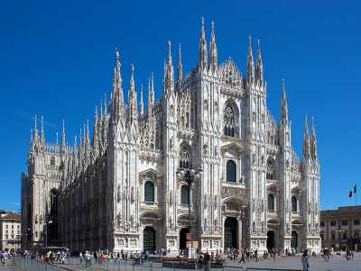
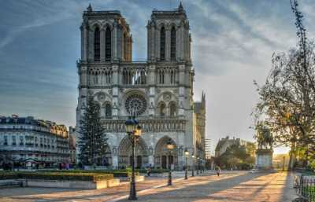

Готически стил
До средата на 12-ти век много големи катедрали са били построени и инженерните умения, необходими за изграждане на високи арки, каменни сводове, високи кули и други подобни, са били добре установени.

Катедралата в Милано
Стилът еволюира до такъв, който има по-големи прозорци, по-леки сводове, поддържани от каменни ребра и преди всичко заострената арка, която е определящата характеристика на стила, известен сега като готически.

Катедралата "Нотр Дам" в Париж
С по-тънки стени, по-големи прозорци и високи заострени сводове, отличителните летящи контрафорси се развиват като средство за опора. Огромните прозорци биват украсени с каменни орнаменти и пълни с витражи, илюстриращи истории от Библията и живота на светците.